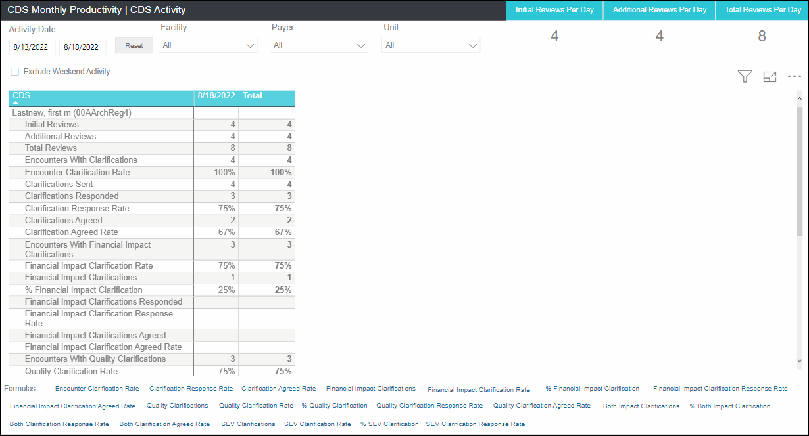
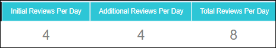

CDS Monthly Productivity
Overview: The CDS Monthly Productivity dashboard helps a CDS to view the trend of various review and clarification metrics over time and analyze the overall performance and productivity.
This report displays the data for rolling last 12 calendar months based on the discharge date (Jan 2021-Dec 2021). It is visible to users with only "CDS" role, that is, the dashboard link is available to a CDS user when that is the only role the user has.
Navigation: On the Analytics home page left side panel, navigate to .
- KPI cards: Initial Reviews Per Day, Additional Reviews Per Day, Total Reviews Per Day
- CDS Monthly Productivity Tabular Chart
On the top panel, you can select desired values for the slicers (refer Report slicers) and the corresponding data gets filtered in charts.
For filters on all pages, refer Filters on all Pages.
For Footnotes, refer Footnotes.
CDS Monthly Productivity

CDS Monthly Productivity - KPI Cards

| KPI Card | Description |
|---|---|
| Initial Reviews Per Day |
This KPI metric displays the average daily initial reviews performed by the CDS for the selected Discharge Date range. Initial Reviews Per Day = (Total number of Initial Reviews with the Initial Review Date in the selected discharge date range/ No. of days CDS worked in the selected discharge date range ) Rounded to 0 decimal places Example: For last 1 month Discharge date, this metric displays the average daily initial reviews by the CDS. Note: Initial Review Date/Time falls in the selected discharge date range. Encounters with "Review Not Needed" encounter status are excluded from this metric calculations. |
| Additional Reviews Per Day |
This KPI metric displays the average daily additional reviews performed by the CDS for the selected Discharge Date range Additional Reviews Per Day = (Total number of Additional Reviews with the additional Review Date in the selected discharge date range/ No. of days CDS worked in the selected discharge date range) Example: For last 1 month Discharge date, this metric displays out of the total number of days CDS's worked, the count of additional reviews done. Rounded to 0 decimal places Note: Additional Review Date/Time falls in the selected discharge date range. Activity Type 'Post-Discharge Reviews' is not considered as an Additional Review by the CDS. Additional Reviews for Encounters with "Review Not Needed" encounter status are excluded from this metric calculations. |
| Total Reviews Per Day |
This KPI metric displays the daily total reviews performed by the CDS for the selected Discharge Date range Total Reviews Per Day = (Total number of Initial and Additional Reviews with the Initial Review Date and additional Review Date in the selected discharge date range/ No. of days CDS worked in the selected discharge date range) Rounded to 0 decimal places Note: Additional Review Date/Time falls in the selected discharge date range. Initial Review Date/Time falls in the selected discharge date range. Activity Type 'Post-Discharge Reviews' is not considered as an Additional Review by the CDS. Initial and Additional Reviews for Encounters with "Review Not Needed" encounter status are excluded from this metric calculations. |
CDS Monthly Productivity Detail Tabular Chart
| Column | Description |
|---|---|
| Initial Reviews |
This metric displays 'Initial Reviews' for each month. The count of encounters with an initial review date/time; AKA Encounters Reviewed. NOTE: Encounters with "Review Not Needed" encounter status are excluded from this metric calculations. |
| Additional Reviews |
This metric displays 'Additional Reviews' for each month. The count of additional reviews performed for the reviewed encounters. NOTE: Encounters with "Review Not Needed" encounter status are excluded from this metric calculations. |
| Total Reviews |
This metric displays 'Total Reviews' for each month. The count of total reviews, i.e. initial and additional reviews performed for the reviewed encounters. NOTE: Encounters with "Review Not Needed" encounter status are excluded from this metric calculations. |
| CMI Shift |
This metric displays the CMI Shift value for each month. CMI Shift = The sum of CMI Shift (CMI After CDI - CMI Before CDI) for the Reconciled-Impact (Impact Type: Financial, Both, Unassigned Impact for Discharge Date < 11/14/2019) encounters that meet the report criteria. (Rounded 4 decimal places E.g., 2.1868)/ Total count of reconciled cases (Auto-Reconciled, Reconciled-Impact, Reconciled-No Impact) for the selected report criteria. NOTE: This value is represented with 4 decimals. |
| CMI Shift % | This metric displays the CMI Shift % value for each month. CMI Shift % = (The sum of CMI Shift (CMI After CDI - CMI Before CDI) for the Reconciled-Impact (Impact Type: Financial, Both, Unassigned Impact for Discharge Date < 11/14/2019) encounters that meet the report criteria) / (CMI Before CDI for Auto Reconciled, Reconciled-No Impact, , Reconciled-Impact (SOI/ROM Impact) Reconciled-Impact (Impact Type: Financial, Both, Unassigned Impact for Discharge Date < 11/14/2019) encounters that meet the report criteria). X 100. NOTE: Rounded 2 decimal places. E.g., 3.14%. |
| Encounter Clarification Rate |
This metric displays 'Encounter Clarification Rate' for each month. The percentage of reviewed encounters with at least one clarification with the status other than DELETED or RETRACTED. Encounter Clarification Rate= (The count of reviewed encounters with at least one clarification with the status other than DELETED or RETRACTED./ Count of Initial Reviews performed) *100. NOTE: Encounters with "Review Not Needed" encounter status are excluded from this metric calculations. |
| Financial Impact Clarification Rate |
This metric displays 'Financial Impact Clarification Rate' for each month. Out of total encounters reviewed, the percentage of Encounters with Financial Impact Clarifications. Financial Impact Clarification Rate = (Encounters with Financial Impact Clarifications /Encounters Reviewed (Initial Reviews) )* 100). NOTE: Financial Impact Clarification Rate = (Count of reviewed encounters with at least one Financial Impact clarification with the status other than DELETED or RETRACTED / Count of encounters with an initial review date) X 100. Clarification with a standard or custom ‘Primary Type at Reconciliation’ defined as ‘Financial or BOTH’ in the admin configuration is a Financial Impact Clarification. Encounters with "Review Not Needed" encounter status are excluded from this metric calculations. |
| Clarifications Sent |
This metric displays 'Overall Clarifications Sent' for each month. The count of sent clarifications with the status other than DELETED or RETRACTED for the reviewed encounters. NOTE: Clarifications for "Review Not Needed" encounter status should not be considered for this metric calculation. Clarifications may or may not have a FINAL response. |
| Clarifications Responded |
This metric displays 'Overall Clarifications Responded' for each month. The count of sent clarifications with Final response other than Pending, Retracted, or No Response. NOTE: Clarifications for "Review Not Needed" encounter status are not considered for this metric calculation. "Deleted" and "Retracted" Clarifications are not considered for this metric calculation. Clarifications that do not have a FINAL response are not considered in this calculation. |
| Provider Response Rate |
This metric displays 'Overall Response Rate' for each month. Out of total sent clarifications, the percentage of clarifications responded. Overall Response Rate = ((Overall Clarifications Responded/ Overall Clarifications Sent) x 100). NOTE: Clarifications for "Review Not Needed" encounter status should not be considered for this metric calculation. "Deleted" and "Retracted" Clarifications are not considered for this metric calculation. |
| Clarifications Agreed |
This metric displays 'Overall Clarifications Agreed' for each month. The count of sent clarifications with Final response as Agreed. NOTE: Clarifications for "Review Not Needed" encounter status should not be considered for this metric calculation. "Deleted" and "Retracted" Clarifications are not considered for this metric calculation. Clarifications that do not have a FINAL response are not considered in this calculation. |
| Provider Agreed Rate |
This metric displays 'Overall Agreed Rate' for each month. Out of total responded clarifications, the percentage of clarifications agreed. Overall Agreed Rate = ((Overall Clarifications Agreed/ Overall Clarifications Responded) x 100). NOTE: Clarifications for "Review Not Needed" encounter status should not be considered for this metric calculation. "Deleted" and "Retracted" Clarifications are not considered for this metric calculation. |
| Provider Alternative Specificity Diagnosis Rate |
Displays 'Overall Clarification Alternative Diagnosis Rate' for each month. Out of total responded clarifications, the percentage of clarification with Final response as "Alternative Diagnosis". Overall Clarifications Alternative Diagnosis Rate = ((Overall Clarifications Alternative Diagnosis/ Overall Clarifications Responded) x 100). Clarifications for "Review Not Needed" encounter status should not be considered for this metric calculation. Clarifications with Status 'DELETED' or 'RETRACTED' are excluded from thecount. |
| Provider Other Explanation Rate |
Displays 'Overall Clarification Other Explanation Rate' for each month. Out of total responded clarifications, the percentage of clarification with Final response as "Other Explanation". Overall Clarifications Other Explanation Rate = ((Overall Clarifications Other Explanation/ Overall Clarifications Responded) x 100). Clarifications for "Review Not Needed" encounter status should not be considered for this metric calculation. Clarifications with Status 'DELETED' or 'RETRACTED' are excluded from the count. |
| Provider Agreed Rate (Agreed & Alt DX) |
Displays 'Overall Agreed Rate (Agreed , Alternative Specificity Diagnosis)for each month. Out of total responded clarifications, the percentage of clarifications agreed with Final response as Agreed, Alternative Diagnoses. Overall Agreed Rate = ((Overall Clarifications Agreed with Final response as Agreed, Alternative Diagnoses/ Overall Clarifications Responded) x 100). Clarifications for "Review Not Needed" encounter status should not be considered for this metric calculation. "Deleted" and "Retracted" Clarifications are not considered for this metric calculation. |
| Provider Agreed Rate (Agreed, Alt DX, Other Exp) |
Displays 'Overall Agreed Rate (Agreed , Alternative Specificity Diagnosis,Other Explanation)' for each month. Out of total responded clarifications, the percentage of clarifications agreed with Final response as Agreed, Other Explanation, Alternative Diagnoses. Overall Agreed Rate = ((Overall Clarifications Agreed with Final response as Agreed, Other Explanation, Alternative Diagnoses/ Overall Clarifications Responded) x 100). Clarifications for "Review Not Needed" encounter status should not be considered for this metric calculation. "Deleted" and "Retracted" Clarifications are not considered for this metric calculation. |
| Financial Impact Clarifications Sent |
This metric displays 'Financial Impact Clarifications Sent' for each month. The count of Financial Impact clarifications with the status other than DELETED or RETRACTED sent for the reviewed encounters. Note: Clarification with a standard or custom ‘Primary Type at Reconciliation’ defined as ‘Financial’ in the admin configuration is a Financial Impact Clarification. Clarifications with Status 'DELETED' or 'RETRACTED' are excluded from the count. Clarifications for "Review Not Needed" encounter status should not be considered for this metric calculation. |
| Financial Impact Clarifications Responded |
This metric displays 'Financial Impact Clarifications Responded' for each month. The count of sent Financial Impact clarifications with Final response other than Pending, Retracted, or No Response. Note: Clarification with a standard or custom ‘Primary Type at Reconciliation’ defined as ‘Financial’ in the admin configuration is a Financial Impact Clarification. Clarifications with Status 'DELETED' or 'RETRACTED' are excluded from the count. Clarifications for "Review Not Needed" encounter status should not be considered for this metric calculation. Clarifications that do not have a FINAL response are not considered in this calculation. |
| Financial Impact Clarification Response Rate |
This metric displays 'Financial Impact Clarification Response Rate' for each month. Out of total Financial Impact Clarifications Sent, the % of Financial Impact Clarifications Responded. Financial Impact Clarification Response Rate = ((Financial Impact Clarification Responded/ Financial Impact Clarifications Sent) x 100). Rounded to 0 decimal places. E.g. 89% or 100%. NOTE: Clarification with a standard or custom ‘Primary Type at Reconciliation’ defined as ‘Financial’ in the admin configuration is a Financial Impact Clarification. Clarifications with Status 'DELETED' or 'RETRACTED' are excluded from the count. Clarifications for "Review Not Needed" encounter status should not be considered for this metric calculation. |
| Financial Impact Clarifications Agreed |
This metric displays 'Financial Impact Clarifications Agreed' for each month. This field displays the count of sent Financial Impact clarifications with Final response as Agreed. NOTE: Clarification with a standard or custom ‘Primary Type at Reconciliation’ defined as ‘Financial’ in the admin configuration is a Financial Impact Clarification. Clarifications with Status 'DELETED' or 'RETRACTED' are excluded from the count. Clarifications for "Review Not Needed" encounter status should not be considered for this metric calculation. Clarifications that do not have a FINAL response are not considered in this calculation. |
| Financial Impact Clarification Agreed Rate |
This metric displays 'Financial Impact Clarifications Agreed Rate' for each month. Out of total Financial Impact Clarifications Responded, the percentage of Financial Impact Clarifications Agreed. Financial Impact Clarification Agreed Rate = ((Financial Impact Clarification Agreed/ Financial Impact Clarification Responded) x 100). Rounded to 0 decimal places. E.g. 89% or 100%. Clarification with a standard or custom ‘Primary Type at Reconciliation’ defined as ‘Financial’ in the admin configuration is a Financial Impact Clarification. Clarifications with Status 'DELETED' or 'RETRACTED' are excluded from the count. Clarifications for "Review Not Needed" encounter status should not be considered for this metric calculation. |
| Quality Clarifications Sent |
This metric displays 'Quality Impact Clarifications Sent' for each month. The count of Quality Impact clarifications with the status other than DELETED or RETRACTED sent for the reviewed encounters. Note: Clarification with a standard or custom ‘Primary Type at Reconciliation’ defined as ‘Quality’ in the admin configuration is a Quality Impact Clarification. Clarifications with Status 'DELETED' or 'RETRACTED' are excluded from the count. Clarifications for "Review Not Needed" encounter status should not be considered for this metric calculation. |
| Quality Clarifications Responded |
This metric displays 'Quality Impact Clarifications Responded' for each month. The count of sent Quality Impact clarifications with FINAL response other than Pending, Retracted, or No Response. Note: Clarification with a standard or custom ‘Primary Type at Reconciliation’ defined as ‘Quality’ in the admin configuration is a Quality Impact Clarification. Clarifications with Status 'DELETED' or 'RETRACTED' are excluded from the count. Clarifications for "Review Not Needed" encounter status should not be considered for this metric calculation. Clarifications that do not have a FINAL response are not considered in this calculation. |
| Quality Clarification Response Rate |
This metric displays 'Quality Impact Clarification Response Rate' for each month. Out of total Quality Impact Clarifications Sent, the % of Quality Impact Clarifications Responded. Quality Impact Clarification Response Rate = ((Quality Impact Clarification Responded/ Quality Impact Clarification Sent) x 100) Rounded to 0 decimal places. E.g. 89% or 100%. NOTE: Clarification with a standard or custom ‘Primary Type at Reconciliation’ defined as ‘Quality’ in the admin configuration is a Quality Impact Clarification. Clarifications with Status 'DELETED' or 'RETRACTED' are excluded from the count. Clarifications for "Review Not Needed" encounter status should not be considered for this metric calculation. |
| Quality Clarifications Agreed |
This metric displays 'Quality Impact Clarifications Agreed' for each month. The count of sent Quality Impact clarifications with FINAL response as Agreed. NOTE: Clarification with a standard or custom ‘Primary Type at Reconciliation’ defined as ‘Quality’ in the admin configuration is a Quality Impact Clarification. Clarifications with Status 'DELETED' or 'RETRACTED' are excluded from the count. Clarifications for "Review Not Needed" encounter status should not be considered for this metric calculation. Clarifications that do not have a FINAL response are not considered in this calculation. |
| Quality Clarification Agreed Rate |
This metric displays 'Quality Impact Clarifications Agreed Rate' for each month. Out of total Quality Impact Clarifications Responded, the % of Quality Impact Clarifications Agreed. Quality Impact Clarification Agreed Rate = ((Quality Impact Clarification Agreed/ Quality Impact Clarification Responded) x 100). Rounded to 0 decimal places. E.g. 89% or 100%. NOTE: Clarifications for "Review Not Needed" encounter status should not be considered for this metric calculation. |
| Both Impact Clarifications Sent |
This metric displays 'Both Impact Clarifications Sent' for each month. The count of clarifications with Primary Type at Reconciliation configured as BOTH (financial and quality) in the Admin configuration. Note: Clarification with a standard or custom ‘Primary Type at Reconciliation’ defined as ‘Financial and Quality’ in the admin configuration is considered as BOTH. Clarifications with Status 'DELETED' or 'RETRACTED' are excluded from the count. Clarifications for "Review Not Needed" encounter status should not be considered for this metric calculation. |
| Both Impact Clarifications Responded |
This metric displays 'Both Impact Clarifications Responded' for each month. The count of sent clarifications with Primary Type at Reconciliation configured as BOTH (financial and quality) in the Admin configuration, for which has FINAL response other than Pending, Retracted, or No Response. Note: Clarification with a standard or custom ‘Primary Type at Reconciliation’ defined as ‘Financial and Quality’ in the admin configuration is considered as BOTH. Clarifications with Status 'DELETED' or 'RETRACTED' are excluded from the count. Clarifications for "Review Not Needed" encounter status should not be considered for this metric calculation. Clarifications that do not have a FINAL response are not considered in this calculation. |
| Both Impact Clarification Response Rate |
This metric displays 'Both Impact Clarification Response Rate' for each month. Out of total Clarifications Sent, the percentage of clarifications with Primary Type at Reconciliation configured as BOTH (financial and quality) in the Admin configuration responded. Both Impact Clarification Response Rate = ((clarifications with Primary Type at Reconciliation configured as BOTH (financial and quality) in the Admin configuration responded./ Both Impact Clarifications Sent) x 100). Rounded to 0 decimal places. E.g. 89% or 100%. NOTE: Clarification with a standard or custom ‘Primary Type at Reconciliation’ defined as ‘Financial and Quality’ in the admin configuration is considered as BOTH. Clarifications with Status 'DELETED' or 'RETRACTED' are excluded from the count. Clarifications for "Review Not Needed" encounter status should not be considered for this metric calculation. |
| Both Impact Clarifications Agreed |
This metric displays 'Both Impact Clarifications Agreed' for each month. The count of clarifications with Primary Type at Reconciliation configured as BOTH (financial and quality) in the Admin configuration agreed. This field displays the count of sent BOTH Impact clarifications with Final response as Agreed. NOTE: Clarification with a standard or custom ‘Primary Type at Reconciliation’ defined as ‘Financial and Quality’ in the admin configuration is considered as BOTH. Clarifications with Status 'DELETED' or 'RETRACTED' are excluded from the count. Clarifications for "Review Not Needed" encounter status should not be considered for this metric calculation. Clarifications that do not have a FINAL response are not considered in this calculation. |
| Both Impact Clarification Agreed Rate |
This metric displays 'Both Impact Clarification Agreed Rate' for each month. Out of total clarifications with BOTH (financial and quality) Impact Agreed, the percentage of clarifications with BOTH (financial and quality) Impact Responded. BOTH Impact Clarification Agreed Rate = ((BOTH Impact Clarification Agreed/BOTH Impact Clarification Responded) x 100). Rounded to 0 decimal places. E.g. 89% or 100%. NOTE: Clarification with a standard or custom ‘Primary Type at Reconciliation’ defined as ‘Financial and Quality’ in the admin configuration is considered as BOTH. Clarifications with Status 'DELETED' or 'RETRACTED' are excluded from the count. Clarifications for "Review Not Needed" encounter status should not be considered for this metric calculation. |
| SEV Clarifications Sent |
This metric displays 'SEV Impact Clarifications Sent' for each month. The count of SEV Impact clarifications with the status other than DELETED or RETRACTED sent for the reviewed encounters. Note: Clarification with a standard or custom ‘Primary Type at Reconciliation’ as SEV Clarifications with Status 'DELETED' or 'RETRACTED' are excluded from the count. Clarifications for "Review Not Needed" encounter status should not be considered for this metric calculation. |
| SEV Clarifications Responded |
This metric displays 'SEV Impact Clarifications Responded' for each month. The count of sent SEV Impact clarifications with FINAL response other than Pending, Retracted, or No Response. Note: Clarification with a standard or custom ‘Primary Type at Reconciliation’ defined as SEV is a SEV Impact Clarification. Clarifications with Status 'DELETED' or 'RETRACTED' are excluded from the count. Clarifications for "Review Not Needed" encounter status should not be considered for this metric calculation. Clarifications that do not have a FINAL response are not considered in this calculation. |
| SEV Clarification Response Rate |
This metric displays 'SEV Impact Clarification Response Rate' for each month. Out of total SEV Impact Clarifications Sent, the percentage of SEV Impact Clarifications Responded. SEV Impact Clarification Response Rate = ((SEV Impact Clarification Responded/ SEV Impact Clarification Sent) x 100). Rounded to 0 decimal places. E.g. 89% or 100%. NOTE: Clarification with a standard or custom ‘Primary Type at Reconciliation’ defined as SEV is a SEV Impact Clarification. Clarifications with Status 'DELETED' or 'RETRACTED' are excluded from the count. Clarifications for "Review Not Needed" encounter status should not be considered for this metric calculation. |
| SEV Clarifications Agreed |
This metric displays 'SEV Impact Clarifications Agreed' for each month. This field displays the count of sent SEV Impact clarifications with Final response as Agreed. NOTE: Clarification with a standard or custom ‘Primary Type at Reconciliation’ defined as SEV is a SEV Impact Clarification. Clarifications with Status 'DELETED' or 'RETRACTED' are excluded from the count. Clarifications for "Review Not Needed" encounter status should not be considered for this metric calculation. Clarifications that do not have a FINAL response are not considered in this calculation. |
| SEV Clarification Agreed Rate |
This metric displays 'SEV Impact Clarification Agreed Rate' for each month. Out of total SEV Impact Clarifications Responded, the % of SEV Impact Clarifications Agreed. SEV Impact Clarification Agreed Rate = ((SEV Impact Clarification Agreed/ SEV Impact Clarification Responded) x 100). Rounded to 0 decimal places. E.g. 89% or 100%. NOTE: Clarification with a standard or custom ‘Primary Type at Reconciliation’ defined as SEV is a SEV Impact Clarification. Clarifications with Status 'DELETED' or 'RETRACTED' are excluded from the count. Clarifications for "Review Not Needed" encounter status should not be considered for this metric calculation. |
| Filter | Description |
|---|---|
| Discharge Date |
|
| Facility |
|
| Payer |
|
| Unit |
|
| Filter | Description |
|---|---|
| Patient Type |
|
| Visit Type |
|
| Weekend Only Stay |
|
| Encounter Status |
|
| Admit Service |
|
| Label | Text on hover |
|---|---|
| Encounter Clarification Rate | Encounter Clarification Rate = (The count of reviewed encounters with at least one clarification with the status other than REMOVED or RETRACTED/ Encounters Reviewed (Initial Reviews)) x100. E.g. 33%. |
| Provider Response Rate | Provider Response Rate = (Count of clarifications with a Final response as Agreed, Not Agreed, Other Explanation, Alternative Specificity Diagnosis, Discuss, Sent to another Provider or Unable to Determine/Count of Clarifications Sent) x100. E.g. 90%. |
| Provider Agreed Rate | Provider Agreed Rate = (Count of clarifications with a Final response as Agreed/Count of Clarifications Responded) x100. E.g. 90% |
| Provider Other Explanation Rate | Provider Other Explanation Rate = (Count of clarifications with a Final response as Other Explanation/Count of Clarifications Responded) x100. E.g. 42%. |
| Provider Agreed Rate (Agreed & Alt DX) | Provider Agreed Rate (Agreed & Alt DX) = (Count of Clarifications Agreed with Final response as Agreed,Alternative Diagnoses/ Overall Clarifications Responded) x100). E.g. 65%. |
| Provider Agreed Rate (Agreed, Alt DX,Other Exp) | Provider Agreed Rate (Agreed, Alt DX, Other Exp) = (Count of Clarifications Agreed with Final response as Agreed, Other Explanation, Alternative Diagnoses/ Overall Clarifications Responded) x 100). E.g. 96%. |
| Provider Alternative Specificity Diagnosis Rate | Provider Alternative Specificity Diagnosis Rate =(Count of clarifications with a Final response as Alternative Specificity Diagnosis/Count of Clarifications Responded) x100. E.g. 76%. |
| Financial Impact Clarifications | Financial Impact Clarifications: Clarifications with standard or custom ‘Primary Type at Reconciliation’ defined as ‘Financial’ in the admin configuration. |
| Financial Impact Clarification Rate | Financial Impact Clarification Rate = (The count of reviewed encounters with at least one Financial Impact Clarification with the status other than REMOVED or RETRACTED/ Encounters Reviewed (Initial Reviews) x100. E.g. 30. |
| Financial Impact Clarification Response Rate | Financial Impact Clarification Response Rate = (Count of Financial Impact clarifications with Final response other than Pending, Retracted, or No Response./ Count of Financial Impact Clarifications Sent) X100. E.g. 75%. |
| Financial Impact Clarification Agreed Rate | Financial Impact Clarification Agreed Rate = (Count of Financial Impact Clarifications with Final Response as Agreed/ Count of Financial Impact Clarification Responded x 100). E.g. 90%. |
| Quality Clarifications | Quality Clarifications: Clarifications with standard or custom ‘Primary Type at Reconciliation’ defined as ‘Quality’ in the admin configuration. |
| Quality Clarification Response Rate | Quality Impact Clarification Response Rate = (Count of Quality Impact Clarifications with Final response other than Pending, Retracted, or No Response / Count of Quality Impact Clarifications Sent x 100). E.g. 88% |
| Quality Clarification Agreed Rate | Quality Impact Clarification Agreed Rate = (Count of Quality Impact Clarifications with Final Response as Agreed/ Count of Quality Impact Clarification Responded x 100). E.g. 100%. |
| Both Impact Clarifications | Both Impact Clarifications: Clarifications with standard or custom ‘Primary Type at Reconciliation’ defined as 'Financial' and ‘Quality’ in the admin configuration. |
| Both Impact Clarification Response Rate | Both Impact Clarification Response Rate = (Count of Both Impact Clarifications with Final response other than Pending, Retracted, or No Response / Count of Both Impact Clarifications Sent x 100). E.g. 88%. |
| Both Impact Clarification Agreed Rate | Both Impact Clarification Agreed Rate = (Count of Both Impact Clarifications with Final Response as Agreed/ Count of Both Impact Clarification Responded x 100). E.g. 100%. |
| SEV Clarifications | SEV Clarifications: Clarifications with ‘Primary Type at Reconciliation’ as SEV. |
| SEV Clarification Response Rate | SEV Impact Clarification Response Rate = (Count of SEV Impact Clarifications with Final response other than Pending, Retracted, or No Response / Count of SEV Impact Clarifications Sent x 100). E.g. 70%. |
| SEV Clarification Agreed Rate | SEV Impact Clarification Agreed Rate = (Count of SEV Impact Clarifications with Final Response as Agreed/ Count of SEV Impact Clarification Responded x 100). E.g. 98%. |